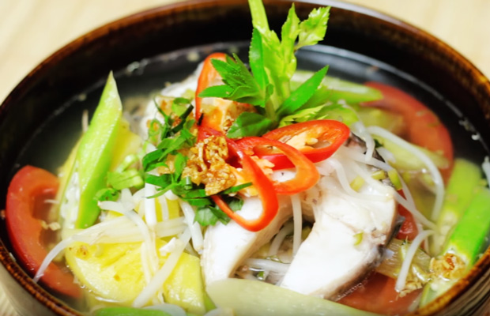

CANH CHUA CÁ LÓC

NGUYÊN LIỆU:
THỰC HIỆN
Đây là công thức nấu món canh chua do cụ Google tổng hợp. Công thức nấu đã được kiểm
nghiệm và yêu thích bởi rất nhiều người. Chúc các bạn chế biến thành công và ăn ngon miệng.
PHẢN HỒI CỦA NGƯỜI DÙNG
Q: Thế nào là "bổ cau"?
A: Là bổ ra giống như bổ trái cau: bổ trái cà theo chiều trừ trên cuống xuống làm 4, 6 hay 8 phần tùy kích thước quả cà và ý thích.
- Emily.
Q: Cảm ơn tác giả, món ăn ngon quá nhưng em nấu theo không được! ;)
A: Chúc mừng bạn!
- Funny boy.
Q: Tác giả ơi, bạc hà là loại rau gì thế?
A: Bạc hà là một loại rau có hình dạng giống cây khoai môn, ở miền bắc gọi là dọc mủng.
- Guest.
LIÊN KẾT